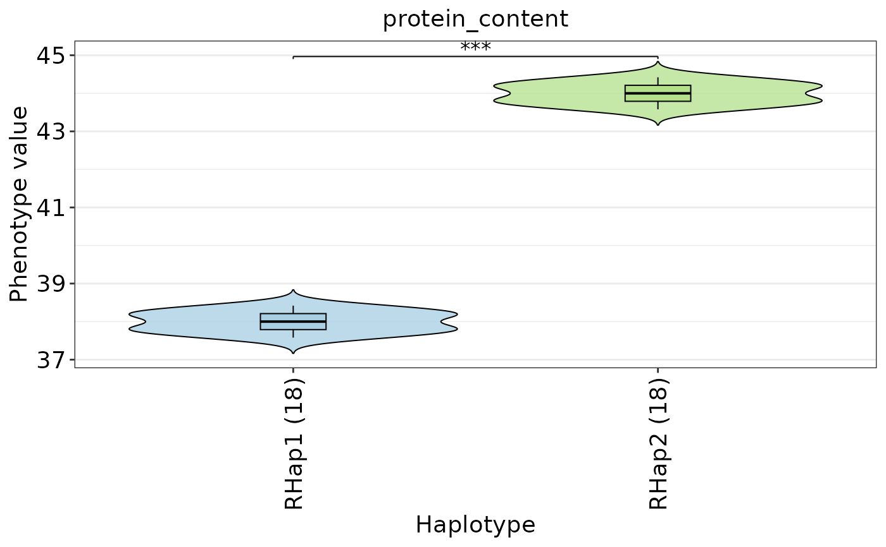

Collapse original haplotypes into refined haplotype groups according to
phenotype similarity. Haplotypes are merged only when their pairwise
phenotype difference is not significant and, optionally, the absolute mean
difference is smaller than effect_threshold.
Usage
refine_haplotype(
hap,
phenotype,
traits = NULL,
sample_col = "sample_id",
min_hap_samples = 2L,
test_method = c("t.test", "wilcox.test", "ks.test"),
p_adjust = "BH",
alpha = 0.05,
effect_threshold = NULL,
group_prefix = "RHap",
mixed_label = "mixed"
)Arguments
- hap
A HapVariant object from
hap_variant().- phenotype
A phenotype table returned by
read_pheno()or a compatible data.frame.- traits
Phenotype trait names. If NULL, all numeric traits are used.
- sample_col
Sample column name in phenotype table.
- min_hap_samples
Minimum sample number required for an original haplotype.
- test_method
Pairwise test method. One of
t.test,wilcox.test, orks.test.- p_adjust
P-value adjustment method passed to
p.adjust().- alpha
Adjusted p-value cutoff. Pairs with adjusted p-value larger than
alphaare considered statistically indistinguishable.- effect_threshold
Optional maximum absolute mean difference for merging haplotypes. If NULL, only the significance criterion is used.
- group_prefix
Prefix for refined haplotype IDs.
- mixed_label
Label used for variant states that are heterogeneous within a refined haplotype group.
Value
A HapRefined object. The object contains refined_hap, which is a
HapVariant-compatible object and can be passed to plot_hap_pheno() and
plot_hap_variant().
Examples
vcf_file <- system.file("extdata", "gtr_demo_variants.vcf", package = "GeneTrackR")
pheno_file <- system.file("extdata", "gtr_demo_pheno.tsv", package = "GeneTrackR")
anno_file <- system.file("extdata", "gtr_demo.genePredExt", package = "GeneTrackR")
vcf <- read_vcf(vcf_file, mode = "memory", verbose = FALSE)
pheno <- read_pheno(pheno_file, verbose = FALSE)
anno <- read_genepred(anno_file, format = "genePredExt", verbose = FALSE)
hap <- hap_variant(vcf, annotation = anno, gene_id = "GeneA", genotype_mode = "string", min_variant_number = 1)
#> [GeneTrackR] Retrieved variants: 11.
refined <- refine_haplotype(
hap,
phenotype = pheno,
traits = "protein_content",
min_hap_samples = 3,
effect_threshold = 0.5
)
refined$refined_haplotypes
#> hap_id original_hap_n original_hap_ids sample_n
#> <char> <int> <char> <int>
#> 1: RHap1 2 Hap1;Hap2 18
#> 2: RHap2 2 Hap3;Hap4 18
#> samples
#> <char>
#> 1: S10;S11;S12;S13;S14;S15;S16;S17;S18;S01;S02;S03;S04;S05;S06;S07;S08;S09
#> 2: S19;S20;S21;S22;S23;S24;S25;S26;S27;S28;S29;S30;S31;S32;S33;S34;S35;S36
#> varA01 varA02 varA03 varLD01 varLD02 varLD03 varLD04 varLD05 varLD06 varA04
#> <char> <char> <char> <char> <char> <char> <char> <char> <char> <char>
#> 1: A mixed C G A C G T A A
#> 2: G mixed G A T T C G C i3
#> varA05
#> <char>
#> 1: i3
#> 2: mixed
plot_hap_pheno(refined$refined_hap, phenotype = pheno, traits = "protein_content", min_hap_samples = 3)
